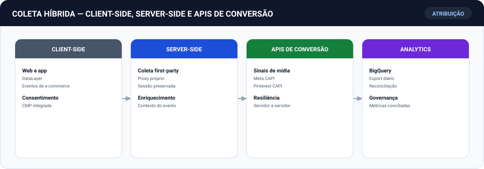
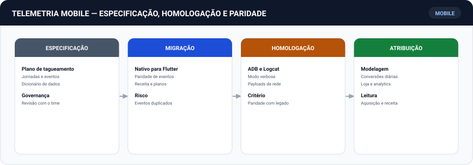
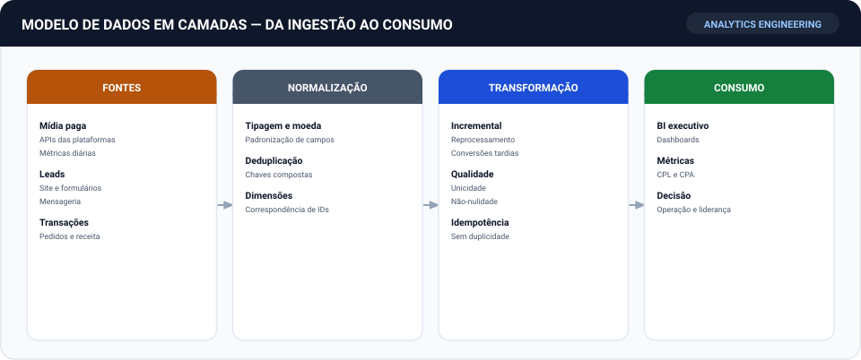
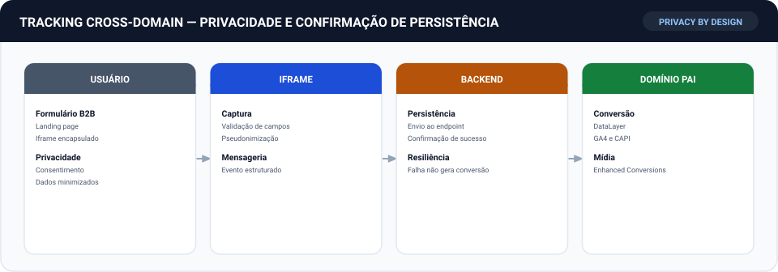
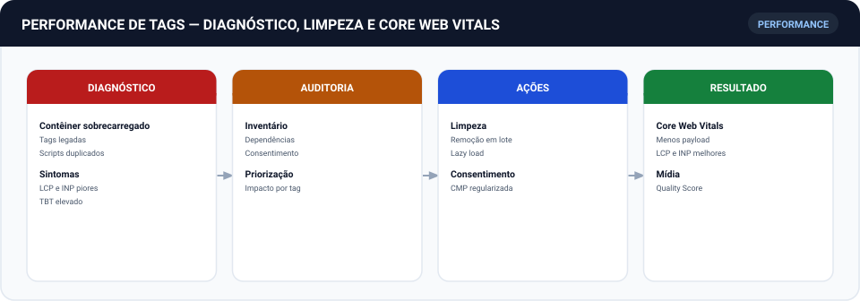
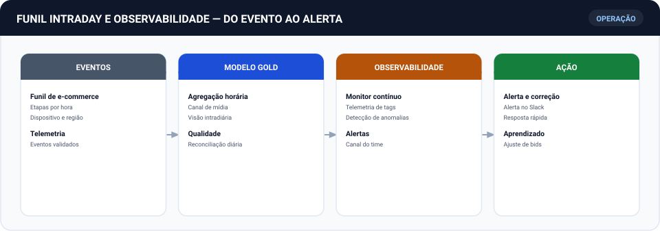
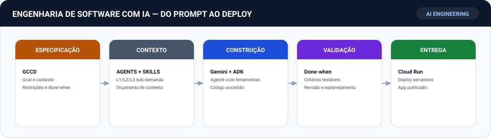

AGENTS.md/SKILL.md), agentes com ferramentas e critérios de avaliação — em produto próprio e laboratório com Google ADK. Experiência técnica comprovada em setores de alto volume e ambientes regulados: varejo, cosméticos, telefonia, mobilidade, serviços funerários e meios de pagamento.
AGENTS.md com fatos duráveis e SKILL.md com divulgação progressiva (L1/L2/L3).| Domínio / Especialidade | Ferramentas & Tecnologias | Aplicações Práticas & Impacto |
|---|---|---|
| Data Collection & Tracking | GTM (Web & Server-Side), DataLayer, JavaScript/TS, Firebase SDK, Android Studio, ADB | Planos de mensuração para e-commerces de alto volume, CAPI Meta/Pinterest, validação de telemetria mobile nativa e Flutter. |
| Analytics Engineering | Google BigQuery, Dataform (SQLX), SQL Avançado, Python, Arquitetura Medalhão | Pipelines ELT incrementais com janela de reprocessamento, deduplicação por chave composta, particionamento e testes de qualidade. |
| Qualidade & Observabilidade | GCP Cloud Run, Cloud Monitoring, Slack Webhooks, Core Web Vitals (LCP/INP/TBT) | Monitoramento contínuo de tags, contenção de scripts de terceiros, expurgo de tags legadas e governança de consentimento. |
| BI & Agentic Analytics | Metabase (API & MCP), Looker Studio, Claude Code, GitHub Actions | Dashboards executivos e intraday de conversão de funis; workflows autônomos com LLMs e MCP integrados ao Data Lake. |
| AI Engineering & Agents | Google AI Studio (Gemini), Google ADK (Python), GCCD, AGENTS.md/SKILL.md, MCP | Especificação, contexto, harness e avaliação de agentes; ferramentas restritas e guardrails. |





| Elemento Auditado | Problema Identificado | Ação Técnica Executada | Impacto na Performance |
|---|---|---|---|
| Tags legadas | Grande volume de tags ativas gerando overhead de download | Remoção em lote de tags, acionadores e variáveis órfãs | Redução do tamanho do arquivo final do contêiner |
| Experimentação | Ferramenta descontinuada injetando scripts de flicker | Exclusão definitiva da tag obsoleta | Eliminação de bloqueios de renderização e estabilidade do LCP |
| Gravação de sessão | Dois scripts concorrentes de gravação de tela ativos | Desduplicação para script único acionado em Window Loaded | Queda no Total Blocking Time (TBT) em dispositivos móveis |
| CMP / consentimento | Fluxo de consentimento desalinhado do processo do cliente | Revisão e regularização da tag, com auditoria de cookies | Consentimento regularizado e integridade do Consent Mode |

AGENTS.md/SKILL.md e divulgação progressiva L1/L2/L3; harness com ferramentas restritas e segredos protegidos; app React 19 + TS + Vite + Tailwind com StorageService; laboratório de agente Google ADK com SkillToolset e EnvironmentToolset.

| Pilar | Setores / Projetos | Principais Realizações Técnicas | Impacto de Negócio |
|---|---|---|---|
| Server-Side & CAPI | E-commerce e varejo B2B | Coleta server-side, CAPI Meta/Pinterest e pseudonimização no cliente. | Recuperação de atribuição perdida por ITP/adblockers; PII tratada. |
| Analytics Engineering | Serviços funerários, transporte e e-commerce | Dataform sob arquitetura medalhão, partições, clustering, testes e pipelines intraday. | Deduplicação, otimização de custos no BigQuery e decisão intraday. |
| Mobile Telemetry | Telecomunicações | Homologação de Firebase SDK e GA4 via Android Studio / ADB na migração para Flutter. | Paridade de eventos de planos e recargas no go-live. |
| Web Performance & Audit | Fintech e varejo B2B | Expurgo de tags legadas; desduplicação de scripts e lazy load. | Melhora em LCP e INP; Índice de Qualidade em mídia paga. |
| Agentic & Observability | Projetos internos e clientes | Monitoramento em Cloud Run com alertas no Slack; fluxos agentic com Claude Code e Metabase MCP. | Detecção imediata de incidentes de tracking e entrega ágil de consultas. |
| AI Engineering | StudyFlow / Agent Lab (formação) | GCCD, context engineering (AGENTS/SKILLS), ADK e critérios done-when. | Software confiável com IA, do prompt ao deploy. |